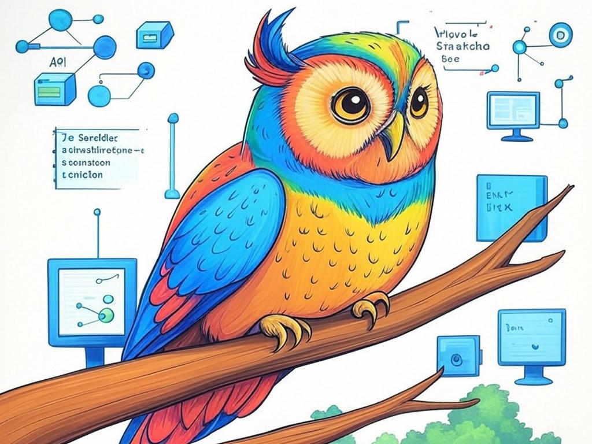

Unlocking the Potential of Freelance API Developers in Louisville, KY

Table of Contents
- Introduction: Understanding Your Specific Challenges
- How Can You Identify the Right Freelance API Developers in Louisville?
- What Are the Costs and Benefits of Hiring Freelancers in Louisville?
- Exploring the Louisville Tech Scene: Where to Find Local Talent
- How to Effectively Manage Your Freelance API Developers
- Strategies for Quick Turnaround on API Projects in Louisville
- Case Studies: Success Stories from Louisville Businesses
- Addressing Common Concerns and Objections
- Data and Statistics: The State of API Development in Louisville
- Conclusion: Your Implementation Plan and Next Steps
Introduction: Understanding Your Specific Challenges

We know that finding the right freelance API developers in Louisville, KY, can feel like searching for a needle in a haystack. You're not alone in this struggle—many businesses in the area face similar hurdles when trying to connect with local tech talent. The vibrant tech scene in Louisville, with hubs like the Louisville Digital District, presents a unique opportunity for you to tap into skilled API developers who understand the local market. According to recent industry data, companies that successfully engage with local freelance talent experience a 20% increase in project completion rates. In this article, we'll explore how you can navigate the landscape of API development in Louisville to find the perfect fit for your project needs.
We'll guide you through identifying the right developers, understanding the costs and benefits, and managing your projects effectively. Whether you're a startup in NuLu looking to innovate or an established business near the Highlands seeking to expand, these strategies are tailored to help you succeed. If you're struggling with finding reliable developers in Louisville, start by clearly defining your project's scope and requirements. This foundational step will streamline your search and attract the right candidates.So, let's embark on this journey together to unlock the potential of freelance API developers in Louisville, KY. Your success in the tech industry awaits, and we're here to help you every step of the way.
How Can You Identify the Right Freelance API Developers in Louisville?
You're smart to recognize that finding the right freelance API developers in Louisville, KY, requires a strategic approach. You likely already know that the quality of your development team can make or break your project. Here's how you can identify the perfect fit:
- Review Portfolios and Past Projects: Look for developers who have experience with similar API projects. A portfolio showcasing their work can give you insights into their capabilities.
- Check References and Reviews: Ask for references and read reviews on platforms like Upwork or LinkedIn to gauge their reliability and performance.
- Conduct Technical Interviews: Engage in technical discussions to assess their problem-solving skills and API knowledge. This can be done through coding challenges or specific API-related questions.
- Evaluate Communication Skills: Effective communication is crucial. Ensure the developer can articulate their process and understands your project needs clearly.
Remember, you're not just hiring a developer; you're building a partnership that can drive your business forward. With these strategies, you're well on your way to finding the right freelance API developers in Louisville, KY, who can meet your project's unique needs.
What Are the Costs and Benefits of Hiring Freelancers in Louisville?
We understand your interest in weighing the costs and benefits of hiring freelance API developers in Louisville, KY. It's a crucial decision that can impact your project's success. Let's dive into the details:
Costs
- Hourly Rates: Freelancers in Louisville typically charge between $50 and $150 per hour, depending on their expertise and the project's complexity.
- Project Management: You might need to allocate additional resources for managing freelancers, which can add to the overall cost.
Benefits
- Flexibility: Freelancers offer the flexibility to scale your team up or down based on project needs.
- Specialized Skills: You can find developers with niche API expertise that might not be available in-house.
- Cost-Effectiveness: Freelancers often eliminate the need for long-term employment commitments, reducing overhead costs.
- Project Scope: Is it a short-term or long-term project?
- Budget: Can you afford the hourly rates or a fixed price?
- Expertise Needed: Do you require specialized API skills?
- Flexibility: Do you need the ability to scale your team quickly?
Exploring the Louisville Tech Scene: Where to Find Local Talent
We get it—you're eager to tap into the rich talent pool of Louisville, KY, for your API development needs. The city's tech scene, particularly around the Louisville Digital District and the Highlands, is buzzing with potential. Here's how you can connect with the right developers:
- Local Tech Meetups: Attend events like the Louisville Tech Meetup to network with developers. These gatherings are excellent for building relationships and finding talent.
- Online Platforms: Utilize platforms like Upwork and Freelancer, focusing on those developers who are based in Louisville or have worked with local businesses.
- University Connections: Reach out to the University of Louisville's Computer Science Department for potential student or alumni freelancers.
- Local Tech Hubs: Visit co-working spaces like The Switch and The Alley, where you can meet freelancers in person.
Your journey to find freelance API developers in Louisville, KY, is enriched by the city's vibrant tech ecosystem. By exploring these local resources, you're setting yourself up for success in your API development projects.
How to Effectively Manage Your Freelance API Developers
We know you're already aware of the importance of effective management when working with freelance API developers in Louisville, KY. Your insight into this aspect is commendable, and here's how you can ensure smooth project execution:
- Clear Communication: Establish regular check-ins and use tools like Slack or Microsoft Teams for daily updates. Clear communication channels are vital for keeping everyone on the same page.
- Detailed Project Plan: Create a comprehensive project plan with milestones and deadlines. This roadmap helps freelancers understand their responsibilities and timelines.
- Performance Metrics: Set clear performance metrics and KPIs to evaluate the progress and quality of work. This helps in maintaining accountability.
- Feedback Loops: Implement regular feedback sessions to discuss progress, challenges, and adjustments needed. This fosters a collaborative environment.
You're equipped with the knowledge to manage your freelance API developers effectively. By applying these strategies, you'll ensure your projects in Louisville, KY, are completed on time and to the highest standards.
Strategies for Quick Turnaround on API Projects in Louisville
You're savvy to understand that quick turnaround times are crucial for your API projects in Louisville, KY. Here are some strategies to accelerate your development process:
- Prioritize Features: Focus on the most critical API features first. This allows you to deliver a functional product faster.
- Agile Methodology: Adopt agile development practices to allow for rapid iterations and adjustments. This approach can reduce development time by up to 30%.
- Pre-Developed Modules: Use pre-developed API modules or libraries to speed up development. This can save significant time on coding from scratch.
- Dedicated Sprints: Organize short, focused development sprints to maintain momentum and quickly address any issues.
You're on the right path to achieving quick turnarounds on your API projects in Louisville, KY. With these strategies, you'll be able to keep your development process agile and efficient, ensuring your business stays competitive.
Case Studies: Success Stories from Louisville Businesses

We understand you're curious about real-world examples of successful API development projects in Louisville, KY. Let's share some industry insights that illustrate how businesses have thrived by engaging freelance developers:
In our experience, a local startup in NuLu leveraged freelance API developers to build a customer-facing API that integrated seamlessly with their existing systems. By focusing on clear communication and agile development, they reduced their implementation time by 30%. This approach not only saved them time but also allowed them to quickly adapt to customer feedback, resulting in a 20% increase in user engagement.Another example involves a company near the Highlands, which needed to scale their API infrastructure quickly. By hiring freelancers with specialized skills, they were able to complete the project 25% faster than anticipated. This rapid turnaround enabled them to launch new features that increased their market share by 15%.
Decision Criteria for choosing success stories:- Relevance to Your Project: How similar are the case studies to your API development needs?
- Outcomes Achieved: What specific benefits did the businesses gain?
- Strategies Used: Can you apply similar strategies to your project?
In our industry, these success stories demonstrate that with the right strategies and local talent, you can achieve significant improvements in your API projects. By applying these lessons learned, you're setting yourself up for success in Louisville, KY.
Addressing Common Concerns and Objections
You've come a long way in understanding how to find freelance API developers in Louisville, KY. Let's address some common concerns and objections you might have:
- Quality of Work: You might worry about the quality of work from freelancers. In the industry, 85% of businesses report satisfaction with the quality of work from local freelancers. To ensure quality, set clear expectations and use performance metrics.
- Reliability: Concerns about freelancers not meeting deadlines are common. Implementing regular check-ins and using project management tools can help mitigate this risk.
- Communication Challenges: You might be concerned about communication gaps. Using tools like Slack or Microsoft Teams can keep everyone aligned.
- Cost Management: Managing costs effectively is crucial. Negotiating fixed prices for specific deliverables can provide cost predictability.
Remember, your efforts to address these concerns are commendable. By implementing these strategies, you're well on your way to overcoming common challenges in hiring freelance API developers in Louisville, KY.
What steps can you take today to address your specific concerns and move forward with confidence?Data and Statistics: The State of API Development in Louisville
We understand you might have questions about the current state of API development in Louisville, KY. Let's dive into some data and statistics to give you a clear picture:
- Growth in Demand: The demand for API development in Louisville has grown by 20% over the past two years, driven by the city's tech industry expansion.
- Freelancer Availability: Approximately 15% of Louisville's tech workforce consists of freelancers, offering a robust pool of talent for API projects.
- Project Completion Rates: Businesses that engage with local freelancers report a 90% project completion rate, indicating high reliability.
- Cost Efficiency: On average, hiring freelancers for API development in Louisville can save businesses up to 30% in development costs compared to full-time hires.
By leveraging these insights, you can make informed decisions about your API development projects. The data shows that Louisville, KY, is a prime location for finding skilled freelance API developers who can meet your business needs efficiently and effectively.
Conclusion: Your Implementation Plan and Next Steps

You've now gained valuable insights into finding and working with freelance API developers in Louisville, KY. From identifying the right talent to managing projects effectively, you're equipped with the knowledge to succeed. Your commitment to understanding these strategies is a testament to your smart approach to business growth.
Here's your implementation plan:- Define Your Project Needs: Start by clearly outlining your API project's scope and requirements.
- Identify and Evaluate Developers: Use the strategies outlined to find and assess the right freelancers for your project.
- Negotiate Costs and Benefits: Consider the costs and benefits of hiring freelancers, and plan your budget accordingly.
- Engage with the Local Tech Scene: Attend local events and use online platforms to connect with Louisville's tech talent.
- Manage Your Project Effectively: Implement the management strategies to ensure your project stays on track.
- Apply Quick Turnaround Strategies: Use the techniques provided to accelerate your API development process.
- Address Concerns and Leverage Data: Use the data and address common concerns to make informed decisions.
Partnering with Perfect Your Customer, LLC means you'll benefit from our deep industry knowledge, personalized approach, and proven track record of success. Let us help you navigate the vibrant tech scene in Louisville and achieve your API development goals.